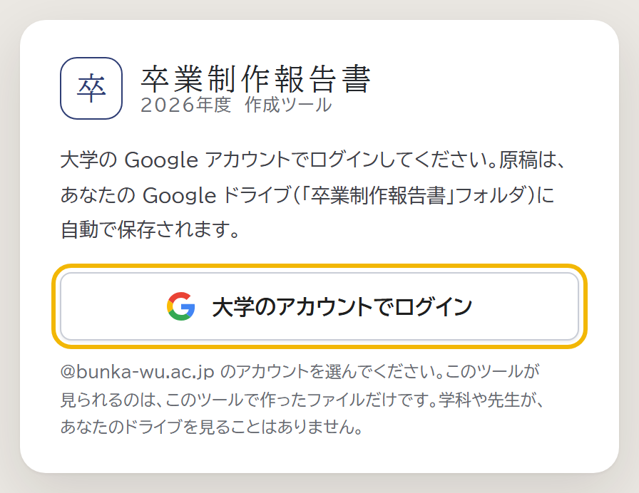
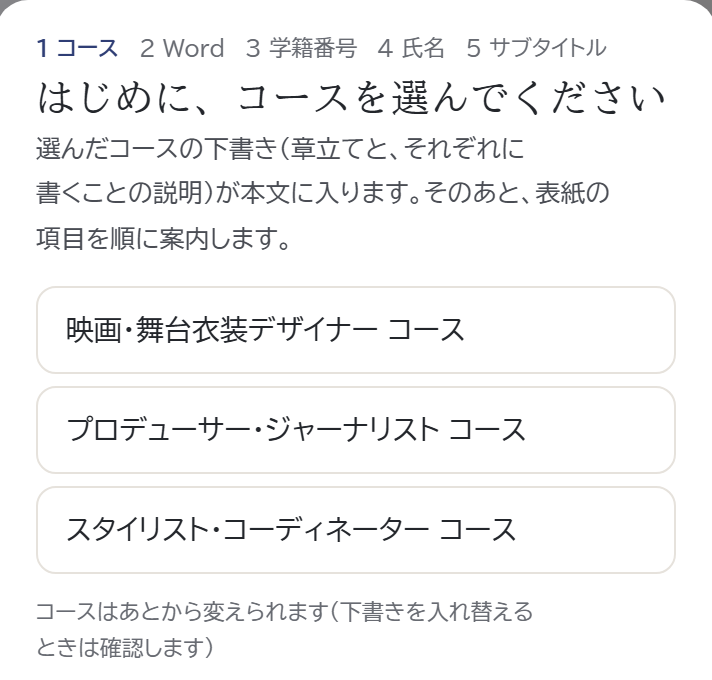
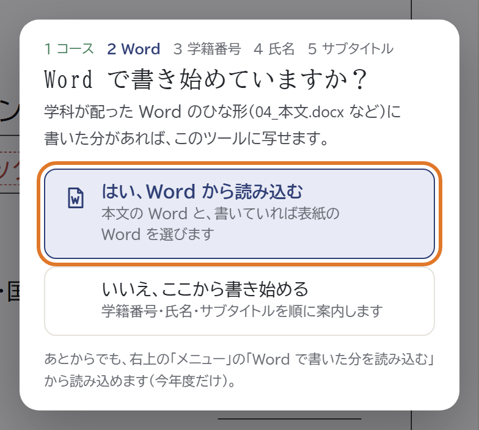
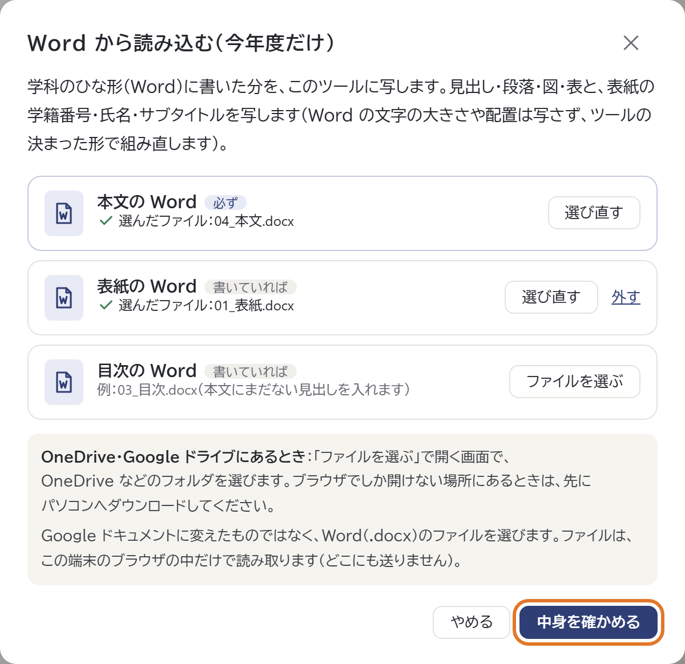
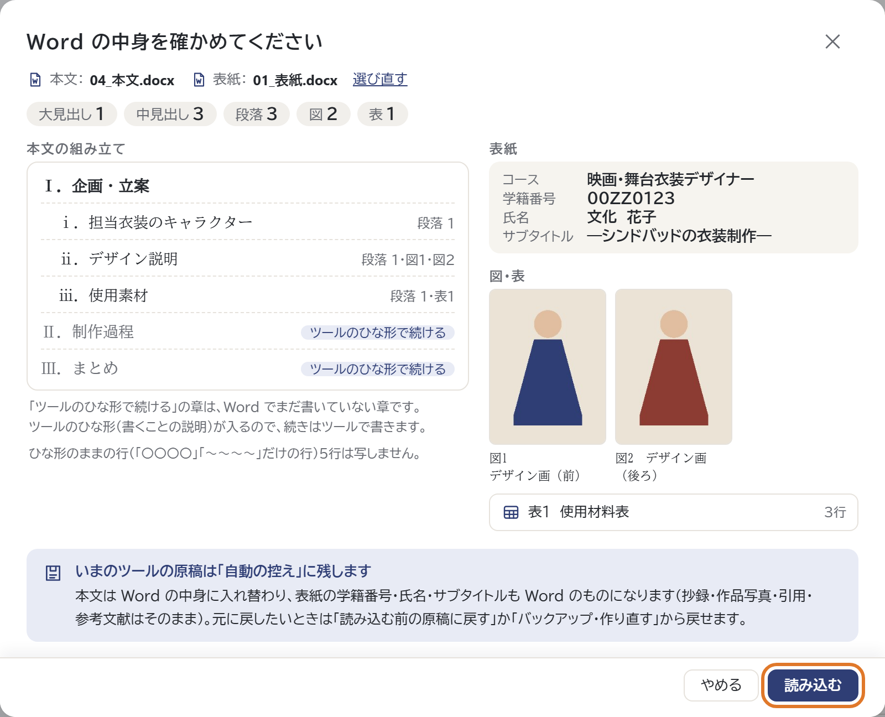
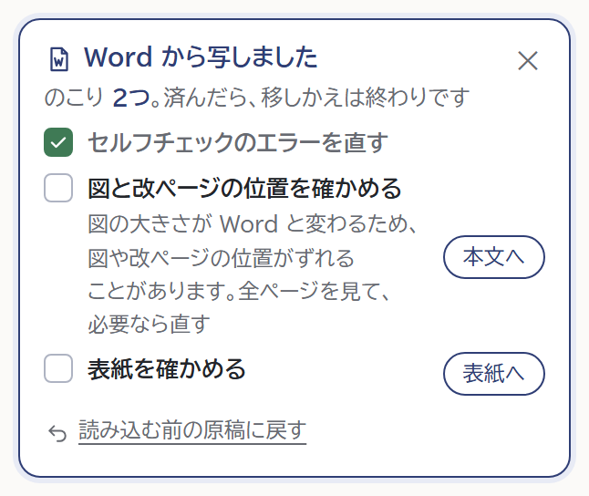

卒卒業制作報告書 国際ファッション文化学科 今年度だけのお知らせ
Word で書き始めた人へ報告書作成ツールへの移り方（今年度だけ）
学科の Word のひな形に書いた分をツールに写して、そこから先はツールで書き進めます。
ツールの URLhttps://kokusai-fashion.github.io/sotsugyo-seisaku-report/
 スマホで開く
スマホで開く
ここだけは守る
- 1本文の Word を選ぶ.docx のまま。.doc と Google ドキュメントは読めません
- 2図と改ページを必ず確かめる図の大きさが Word と変わるため
- 3赤い「直すところ」を直すWord で気づかなかった誤り
移り方画像ののところを押します
-
1ツールを開いてログイン

大学の Google アカウント（@bunka-wu.ac.jp）でログインします。
-
2コースを選ぶ

はじめて開くと、表紙の上に案内が出ます。自分のコースを選びます。
-
3「はい、Word から読み込む」

「Word で書き始めていますか？」と聞かれたら、「はい」を押します。
-
4Word を選んで確かめる

本文（04_本文.docx）は必ず、表紙（01_表紙.docx）は書いていれば選びます。
-
5確かめて「読み込む」

章立て・図・表の数と表紙の項目が出ます。読み取れなかった所は上に出ます。
-
6「つぎにすること」を済ませる

右の欄（スマホはチェックの欄の上）に出る項目を済ませます。図の大きさが変わるため、図と改ページの位置は必ず確かめます。
気をつけること
- 読み込むのは本文と表紙だけ。目次は自動。抄録は先生の許可のあと、ツールで書きます。
- スマホでも選べます。OneDrive・Google ドライブ・iCloud Drive の中からも選べます。読み込んだあとの見直し（図の位置など）は、パソコンで。
- 読み込んだあとは、ツールで書く。ツールの原稿を Word に戻すことはできません。
知っておくと安心
- 写すのは中身だけ。見出し・段落・図（写真とタイトル）・表・改ページと、表紙の項目。見た目はツールの形に組み直します。
- 書いていない章は写しません。〇〇〇〇・～～～のままの章は、ツールのひな形で続けます。
- 元に戻せます。読み込む前の原稿は控えに残り、「読み込む前の原稿に戻す」で戻せます。
- あとから読み込むときは、右上の「メニュー」の「Word で書いた分を読み込む（今年度だけ）」から。